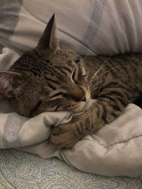
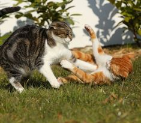

Os Encantos dos Gatos
Os gatos são animais fascinantes que conquistaram o coração de muitas pessoas ao redor do mundo. Com sua personalidade independente e pelagem macia, eles se tornaram companheiros queridos em muitos lares.
Além de serem adoráveis, os gatos também são excelentes caçadores, o que remonta à sua história como animais domesticados. Sua agilidade e destreza os tornam predadores naturais, capazes de caçar pequenos roedores e insetos.
Curiosidades sobre Gatos
Você sabia que os gatos têm a habilidade de ronronar? Este som suave é muitas vezes associado a contentamento, mas os gatos também podem ronronar quando estão doentes ou com medo, servindo como uma forma de auto-cura.
Outra curiosidade interessante é que os gatos têm uma incrível capacidade de se limpar. Sua língua áspera atua como uma escova, removendo sujeira e pelos soltos do seu pelo. Isso os ajuda a manterem-se limpos e higienizados.
Fotos
Gato Dormindo
Gato Olhando pela Janela
Gato em Pose
Áudio Relaxante para Gatos
Os créditos do audio podem ser encontrados nos seguintes links: